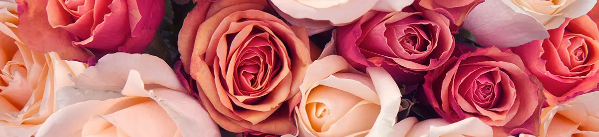

Explore a variety of beautiful flowers for every occasion.
1. Lily
Lilies are one of the most popular and versatile flowers in the world. Coming in a variety of colors and known for their strong fragrance, this elegant bloom is a show-stopper on its own while also serving as the perfect complement to any bouquet. In fact, lilies are one of the most popular flowers in the world, and it's not hard to see why. There are over 100 different types of true lilies belonging to the “lilium” genus. Lilies are found predominantly in the Northern Hemisphere.
2. Rose
Like the flower itself, the history of the rose is very colorful. Roses have been naturally growing for over 35 million years! However, they were not known to be cultivated until about 5,000 years ago. Their usage began not just as a decorative touch to one’s home, but they were also used for medicinal purposes and to make perfumes, and their petals were even used as confetti for festive occasions. Getting your roses into water quickly is the first step in caring for them. Fill a vase three-fourths full of fresh, cool tap water. The roses will absorb the water, soaking up the nutrients that will travel up to the bloom and create a lively flower.